Стационарный блендер BORK B802
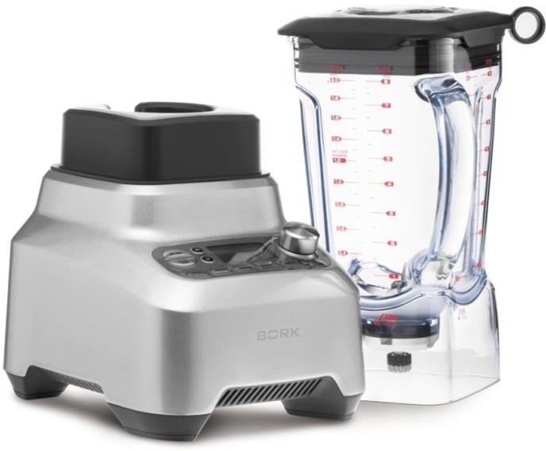Как текстура влияет на вкус?
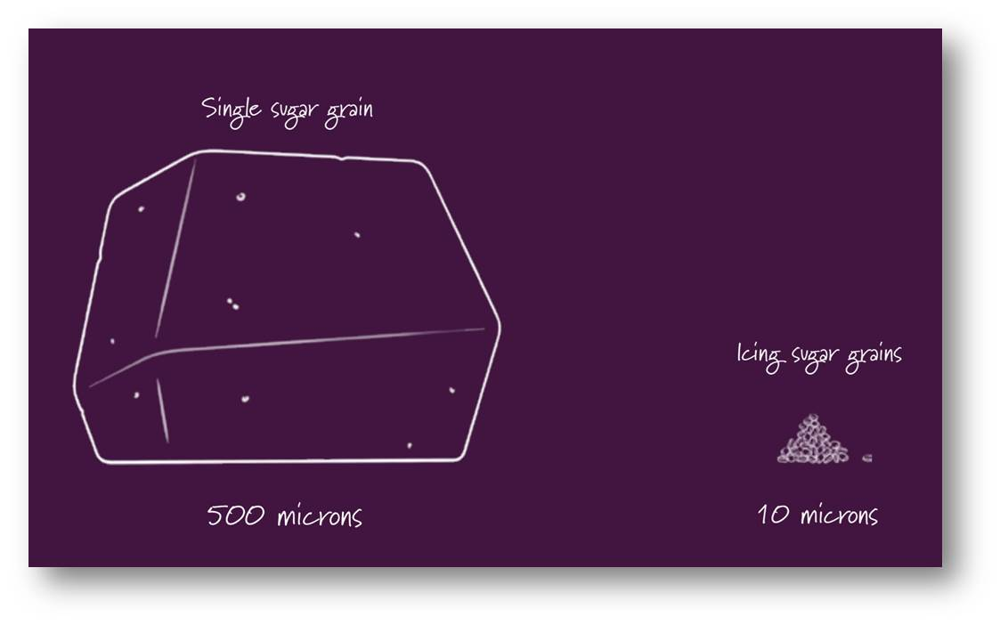Представьте себе, что в состоянии сделать коктейль более сладким и сливочным без добавления сахара или сливок, или создавать сладкие сорбеты чисто из замороженных фруктов.
Существует волшебство в процессе смешивания - это размер частиц смешиваемых ингредиентов.
Размер частиц имеет решающее значение в том, как мы воспринимаем не только текстуру, но и вкус еды.
То как наши вкусовые рецепторы воспринимают соль, сахар, бархатистость, жирность и послевкусие из тех же ингредиентов, меняется, когда мы изменяем размер частиц.
В лаборатории размер частиц измеряется в мкм. 1 микрон миллионная часть метра. С точки зрения еды, при изготовлении глазури, например, кондитеры стараются обеспечить, чтобы каждая шоколадная частица имела размер менее 25 мкм. Если частицы будут большего размера, они будут чувствоваться на языке, и шоколад просто не будет иметь сливочный вкус.
Тем не менее, в повседневной кулинарии, в некоторых рецептах уделяется больше внимания на комбинацию ингредиентов, а не на их текстуру, несмотря на то, что текстура ничуть не менее важна для нашего вкусовосприятия.
Просто, чтобы продемонстрировать влияние размера частиц, проведем простой эксперимент, который вы можете легко сделать в свой собственном доме.
Проведем эксперимент. Сравним вслепую гранулированный сахар и сахарную пудру. Гранулированный белый сахар зернистый, во-первых, имеет гораздо меньше первоначального вкуса, чем сахарная пудра. Когда он растворяется, образуется тяжелое карамельное послевкусие. Аромат сахарной пудрой «взрывается» на языке сразу, дегустация острее, слаще и тоньше. Но это одно и тоже вещество, просто частицы разного размера. Так что это текстура, которая оказывает влияние на вкус. Гранулированный белый сахар имеет размер частиц от примерно 500 мкм, то есть каждую частицу легко обнаружить на языке. Сахарная пудра имеет размер частиц около 10 мкм.
Это примерно в 50 раз меньше, чем обычный сахар. И мы воспринимаем один и тот же ингредиент, как две совершенно разные вещи, чисто из-за изменения его размеров. То же самое происходит со вкусом во многих продуктах питания.
Блендеры были разработаны, чтобы смешать и измельчать множество ингредиентов на более мелкие частицы. Но так же, как в случае с сахаром, то на, сколько маленькими частицы становятся, имеет огромное значение для вкуса и текстуры готового продукта. И когда дело доходит до работы с блендером, для большинства продуктов, чем тоньше результат - тем лучше. Суперблендер BORK измельчает и смешивает любые ингредиенты до консистенции, которая гораздо ярче воспринимается на вкус.
Сочетание высокой мощности, системы лезвий обеспечивают тончайшее измельчение, которое несет новые возможности в раскрытии вкуса. Чего невозможно было добиться до этого момента. Получите максимум вкуса с суперблендером BORK.
Нелегко смешивать зеленые смузи
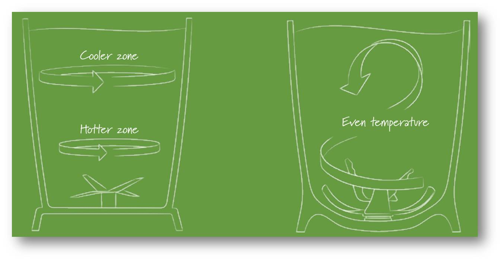"Зеленый коктейль" стал одним из самых популярных и модных слов 21-го века (до сих пор). Общее мнение таково, что зеленые коктейли полны питательными веществами, потому что, в отличие от некоторых альтернативных напитков для здоровья, они используют ингредиенты целиком, то есть вы используете все волокна и витамины. Это важно, не так ли? Однако есть несколько тонкостей с приготовлением таких напитков. Если использовать неправильное оборудование, ваш зеленый коктейль не будет столь же питательным, как вы, возможно, надеялись.
Проще говоря, для зеленых смузи существуют два критических фактора; размер частиц, и сохранение витаминов. Размер частиц, важен не только потому, что это делает коктейли вкуснее, а также обеспечивает лучшую усвояемость питательных веществ. В самом деле, многие диетологи считают, что чем мельче частицы, тем легче питательные вещества всасываться в организм в процессе пищеварения. Таким образом, меньшие частицы делают смузи более полезным. А в разных блендерах размер частиц может отличаться значительно.
Конечно, ответ звучит просто: используйте блендер, который создает более мелкие частицы! Если бы это было так просто.
Как ни странно, стремление добиться более мелких частиц может привести к значительным разрушениям тех самых питательных веществ, которых мы стремимся сохранить. Дело в том, что при создании мельчайших частиц мы наблюдаем сочетание высоких оборотов лезвий с сильным выделением тепла. И это может разрушить витамины, содержащиеся в сырых ингредиентах. С помощью неправильного оборудования, это разрушение может быть значительным, даже за 60 секунд или меньше.
Многие коммерческие блендеры используют такой вид движения ножей, при котором продукт медленно вращается по спирали в нижней части блендера. Это означает, что ингредиенты в нижней части могут задерживаться. И часто эти ингредиенты сильно перегреваются, так как они подвергаются интенсивному трению. Гораздо больше, чем ингредиенты, находящиеся выше.
Суперблендер BORK обеспечивает уникальную геометрию движения продукта. Три центральных лезвия захватывают и втягивают ингредиенты вниз, в то время как три больших широких ножа измельчают ингредиенты в мельчайшие частицы очень быстро. Эти широкие лопасти изогнуты, как и основание чаши, и, действуя в системе, они быстро выталкивают измельченные ингредиенты вверх, в прохладную зону, прежде чем они станут более теплыми. Подобное движение продукта распространяет тепло равномерно по всей смеси, а не с акцентом на нагрев в одной области. Результатом является то, что размер частиц получается минимальный, что обеспечивает лучшее усвоение витаминов. Согласно тестам, до 24% питательных веществ сохраняется, в сравнении с типовыми коммерческими блендерами.
Зеленый коктейль приготовленный в BORK B802 будет содержать на 24% больше витамина С, на 5% больше кальция, на 9% больше магния, и на 23% больше калия, чем в зеленых коктейлях сделанных в ведущих коммерческих блендерах.
Кто сказал, что вы не можете иметь лучшее из обоих миров?
Секрет в маленьких пузырьках
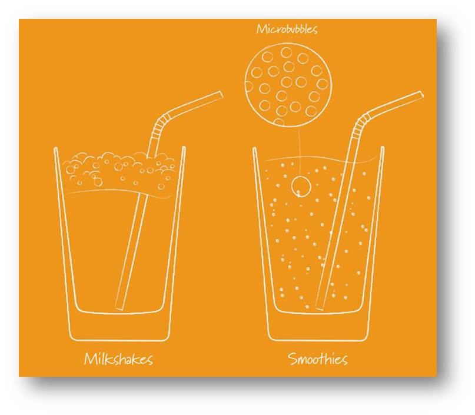Молочные продукты являются распространенными ингредиентами в большинстве смузи и молочных коктейлях. Например, молоко, йогурт и сливки. Когда взбивание происходит интенсивно, жиры в молочных продуктах способны задерживаться в воздушных карманах в виде скопления пузырьков. И так же, как размер частиц твердых ингредиентов влияет на вкус, размер пузырьков также оказывает существенное влияние на вкусовые ощущения и текстуру напитков. Крошечные пузырьки воздуха могут задержать в себе ароматические вкусовые молекулы и стимулировать вкусовые рецепторы для повышения восприимчивости вкуса.
Как и любой трехлетний ребенок с соломкой и стаканом молока может сказать вам, что можно сделать пузырьки на поверхности напитка. Эти пузырьки лопаются быстро, то есть вы должны пить быстро, чтобы насладиться ими, пока они еще есть.
«Микропузырьки» настолько малы, что они могут размещаться в жидкости равномерно и сделать коктейльный вкус более сливочным и легким. Микропузырьки имеют размер меньше чем миллиметр и выглядят так же, как густое молоко, но они создают шелковисто-кремовую текстуру напитка.
Но есть две трудности в создании микропузырьков. Первое, что ингредиенты нужно смешать таким образом, чтобы воздух равномерно распределился по всей смеси. Второе, когда лед и замороженные фрукты смешивают с жидкостью, в результате чего падает температура. Образуется воздушный карман выше лезвий, так называемый эффект «иглу», и ножи вращаются без нагрузки. А замороженные ингредиенты застаиваются выше. По этой причине приходиться пользоваться аксессуарами, лопатками и толкателями, либо останавливать блендер и встряхивать кувшин.
Система смешивания ProKinetix создает мощную взрывную силу, обеспечивая циркуляцию продукта быстро и по всему объему кувшина. Этот уникальная траектория, вместе с высокоскоростными ножами, помогает смешивать воздух и жидкости вместе с образованием микропузырьков.
Также суперблендер BORK оснащен автоматической программой SMOOTHIE с плавным пуском, чтобы втянуть ингредиенты вниз и предотвратить формирование эффекта «иглу». Затем используется комбинацию скорости со взрывами/всплесками высокой мощности, чтобы максимизировать образование текстуры из микропузырьков.
Выпустим немного пара!
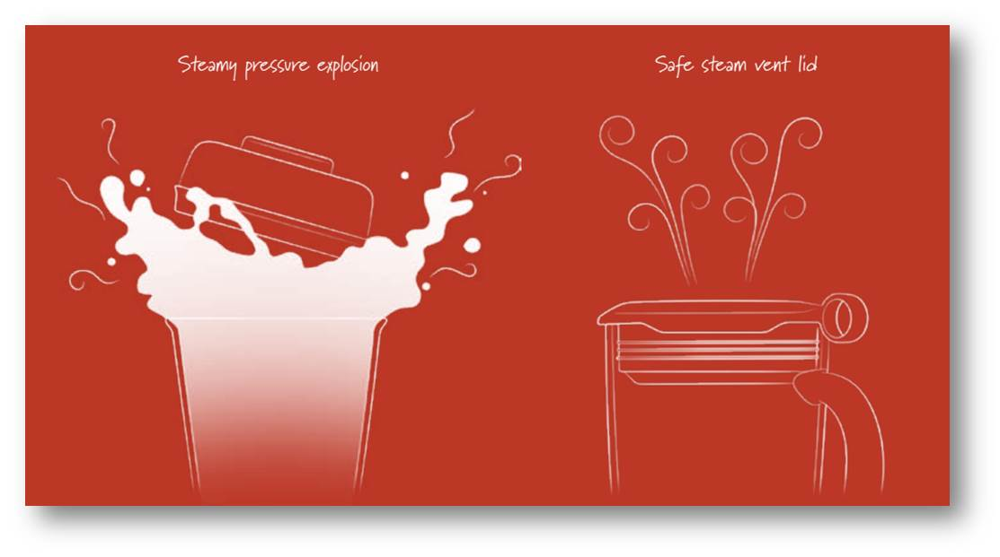Мощный блендер может смешать ингредиенты за минуту или меньше. Высокие скорости и взаимодействие ингредиентов создает трение, и это трение может создать довольно много тепла. Мощный блендер на высокой скорости, например, может нагреть жидкость на целых 15 °С в течение одной минуты.
B802 использует трение, созданное при работе автопрограммы и превращает холодные ингредиенты в горячие за 6 минут. Но, некоторые повара любят смешивать уже приготовленные супы перед подачей на стол, либо смешивать с дополнительными ингредиентами, или для насыщения жидкости воздухом и создания сливочной текстуры. Но надо быть осторожным! В большинстве блендеров, смешивание горячих жидкостей чревато опасностью. По мере роста температуры ингредиентов, они начинают освобождать содержащуюся воду в виде пара. Этот процесс начинается от 50 °С и выше. Вода расширяется приблизительно в 1 600 раз, когда она превращается в пар. Это означает, что только из 1 чайной ложки воды получится более 8 литров пара. Если этот рост температуры происходит медленно, то, как правило, достаточно безопасно.
Но когда вы смешиваете горячий суп, холодный воздух внутри блендера проталкивается в ингредиенты почти мгновенно и изменение давления происходит очень быстро. Если пару деться некуда, давление вырастет до взрывоопасной точки очень быстро. Это одна из причин того, что крышка блендера вылетает при смешивании горячих продуктов, и они могут выплеснуться из блендера. Поэтому, обычные блендеры не могут использоваться для нагрева, или для работы уже с горячими ингредиентами.
BORK B802 был разработан с плотно закрывающейся крышкой и с отверстиями для выхода пара. Чтобы удержать крышку на месте при возникновении давления, и позволить пару выходить постепенно во время смешивания.
Также, программа Суп использует мягкий старт, чтобы избежать создания резких всплесков горячей жидкости, а также используется низкая скорость в конце цикла, чтобы помочь избавиться от пузырьков пара, которые могли быть сформированы. Это означает вы можете спокойно создавать супы из холодных ингредиентов, делая их горячими, или сразу из приготовленных (горячих) ингредиентов.
Помните, что лучше, чтобы ингредиенты охладились ниже точки кипения и никогда не заполняйте блендер выше 1,2 литровой отметки при смешивании горячих жидкостей.
Не нагревай!
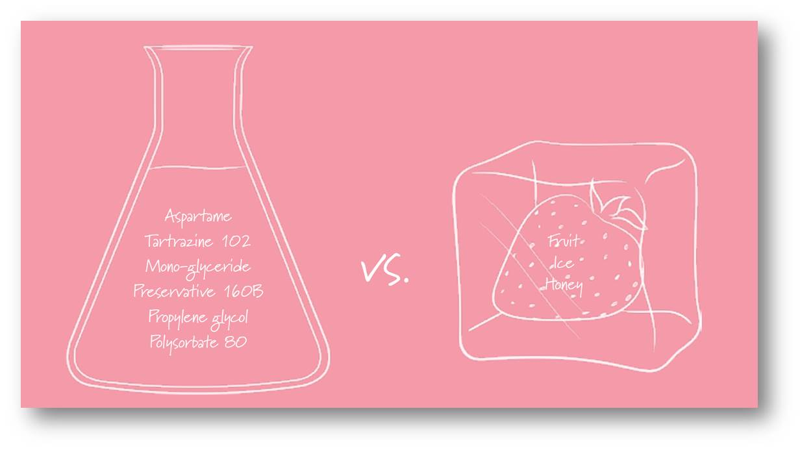Супер мощные блендеры могут измельчать ингредиенты без добавления жидкости, в том числе получение муки и измельчение семян. Коммерческие блендеры обычно имеют кувшины с плоским дном, и это означает, что частицы на дне кувшина могут отражаться/отскакивать несколько раз между стенками чаши и ножами, нагреваясь, прежде чем ингредиенты выше даже начнут смешиваться. Так, к тому времени, когда все ингредиенты будут измельчены должным образом, некоторые части микса могут стать очень горячими. Это тепло начинает высвобождать ароматические масла, находящиеся во внутренних слоях зерна, в результате чего мука слипается.
B802 сохраняет ингредиенты холодными при измельчении из-за изогнутой формы лезвий и дна чаши. Продукт поднимается вверх от ножей быстро. Это позволяет сухим ингредиентам циркулировать с холодным воздухом сверху и предотвратить перегрев. При работе ProKinetix, тепло распространяется равномерно и может создаться достаточно тепла, когда это необходимо, как в программе «суп», но передает намного меньше тепла при смешивании сухих ингредиентов, таких как мука.
Можно делать различную муку с сохранением холода: из целых зерен, хлебные смеси, безглютеновую муку, измельчать семена.
Никакой химии внутри!
Мороженое, шербеты и другие магазинные десерты содержат добавки и часто имеют высокое содержание сахара и жира. Такие названия, как моноглицерида, аспартам, и пропиленгликоль не очень относится к ингредиентам для десерта. И номера, как полисорбат 80, тартразин 102 или консервант 160B звучат тоже не аппетитно.
Мы считаем, что десерт может и должен быть натуральным, а не лабораторным экспериментом. С B802 вам нужны только ингредиенты, которые вы выбрали сами, и ничего больше. B802 делает это возможным, с силой и скоростью измельчает даже сильно замороженные ингредиенты в сливочную и кремовую текстуру. Используйте специальную программу для получения натуральных десертов, или продолжайте употреблять добавки в вашем меню.
Автопрограммы предназначены чтобы свести к минимуму вмешательство в процесс. Но при измельчении большого количества замороженных фруктов и льда без добавления жидкости иногда нужно помочь толкателем.
Открывай больше полезного!
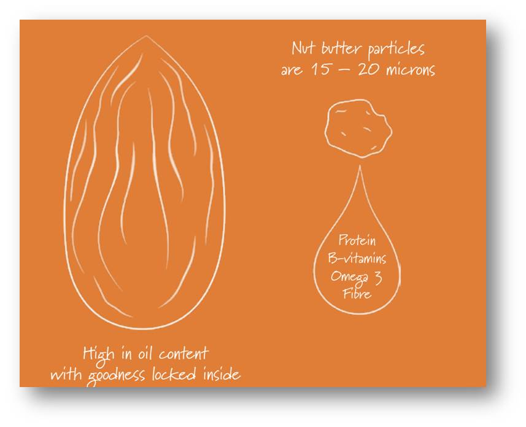Целые орехи и семена - важный природный источник полезных компонентов. Они богаты белком, витаминами группы В, Омега 3 и клетчаткой. Из-за их масел и жирных кислот, возможно, если правильно обработать, превратить орехи и семена во вкусное масло. Арахисовое масло, конечно, самое известное. Но есть мир других орехов и семян: семена подсолнечника, фисташковые орехи и бразильские орехи, и т. д. Каждый из них имеет свои собственные отличный аромат и профиль витаминов, и из каждого из них можно сделать масло, соус, вкусную пасту.
Многие ореховые масла можно купить в магазинах. Однако в них часто добавляют стабилизирующие агенты, сахар, добавки и консерванты, чтобы продлить срок хранения.
Чтобы получить самую свежую и полезную ореховую пасту вам нужны цельные, свежие или жареные орехи и никаких добавок. Но как это сделать?
B802 измельчает орехи на мельчайшие частицы, используя очень высокую скорость вращения ножей, высвобождая масла изнутри орехов и семян, превращая некогда сухую структуру в пасту. Масла выпускаемые во время обработки системой Pro Kinetix остаются прохладными и сохраняют питательные вещества.
Масло не смешивается с жидкостями. Или смешивается?
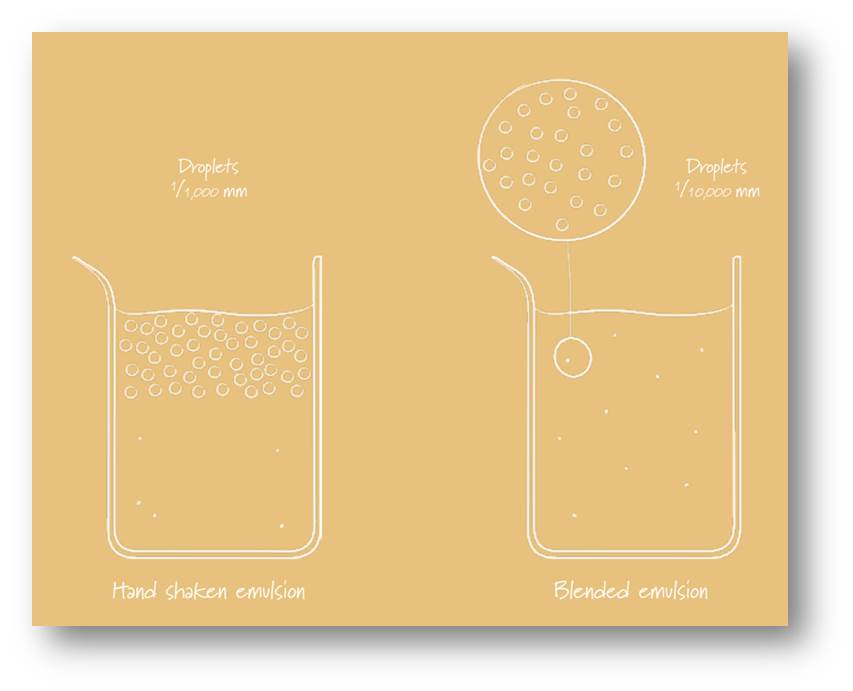Лучшие соусы и приправы имеют гладкие, сливочные текстуры, изготавливаемые путем смешивания масел и воды до образования эмульсии. Самая известная природная эмульсия – МОЛОКО. Эмульсии могут быть получены одним из двух способов: либо путем добавления крошечных капель жира в водянистую основу (например, майонез), или, наоборот. В любом случае, эмульсии создают другой новый вкус и аромат, отличный от суммы их составляющих. Но масла и вода трудно смешиваются. Так как же объединить жидкости, которые обычно расслаиваются? Поверхностное натяжение является причиной образования слоев. Их в буквальном смысле нужно разорвать, разбивая жидкости на мельчайшие капельки.
Это может быть сделано при встряхивании, взбивании или смешивании. Взбивая вручную мы получим размер капель в 1/1000 мм. Хотя это может показаться маленьким размером, жидкость вскоре снова расслоится.
Высокая скорость смешивания в B802 может создать крошечные капли размером в 1/10000 мм. Это примерно в четыре раза меньше, чем при взбивании, и в десять раз меньше, чем при встряхивании. Размер капель - ключ к стабильной эмульсии. Чем меньше капли, тем меньше поверхностное натяжение.
Использование B802 позволяет делать стабильные эмульсии без добавления химических поверхностно-активных веществ или стабилизаторов.
Система ножей ProKinetix позволяет создавать эмульсии, которые традиционно было сложно получить в блендере без разделения на слои. Без перегрева и с правильной текстурой.
Свежесть – это все
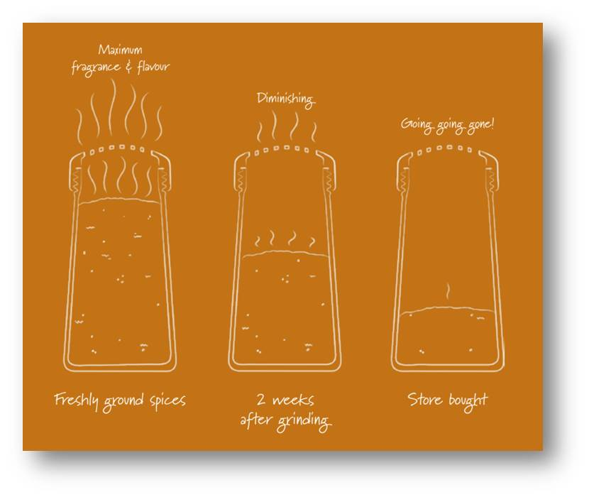Специи могут быть представлены в различных формах, включая семена, корни, кору, овощи и листья. Но большинство специй, которые используются при приготовлении, имеют твердую структуру, которая заключает в себе аромат и вкусовые компоненты. Внешний твердый слой защищает специи от интенсивной потери аромата. Специи будут оставаться свежими в течение 2 лет или более при хранении в целом виде. Когда специи измельчаются, все новые поверхности начинают мгновенно окисляться. При этом день за днем аромат начинает уходить, пока не остается просто пудра. Так вкус на 70% определяет аромат, окисление ароматических соединений будет значительно уменьшать запах и вкус ваших готовых блюд.
Так измельчение специй, по мере необходимости, создает большее влияние на аромат для всех видов блюд. Классический инструмент для измельчения специй - ступка и пестик, но есть также другие устройства, тонкие терки. В любом случае это тяжелая работа и трудно получить специи достаточно мелкого размера.
B802 измельчает даже самые твердые специи, как Сушеный Иранский Лайм, в мелкий порошок. Специи можно получать любого размера, без потери аромата и перегрева. Таймер обратного отсчета будет полезен для контроля за текстурой специй.
Смешать или не смешать?
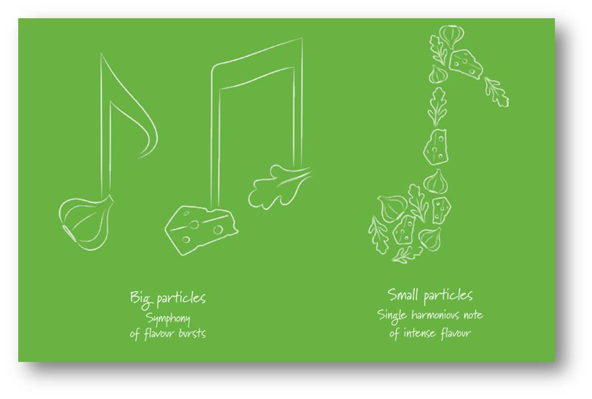Смешать или не смешать? Соусы это гораздо больше чем просто ингредиенты. Текстура соуса имеет удивительно мощный эффект на конечном аромате. Соусы обычно содержат яркие ингредиенты как чеснок, зелень, оливки, сыр пармезан или голубой сыр. Их вкусы можно объединить. Чем тоньше текстура, тем ярче раскрывается аромат. Соус становиться слаще и приобретает кремовость. Если текстура грубая мы получим симфонию вкуса, с взрывом различных ароматов высвобождаемых один за одним на языке.
Вот почему в рецептах пюре, как хумус, где мы стремимся к сильному, особому вкусу. В рецептах таких, как ореховый песто, однако, лучше чтобы мы почувствовали каждый ингредиент отдельно.
B802 дает вам контроль, чтобы создать соусы разных текстур. От супер однородной текстуры «Программа пюре», до более крупных текстур с помощью параметра «Slow stir».
Смешать, но не взбалтывать
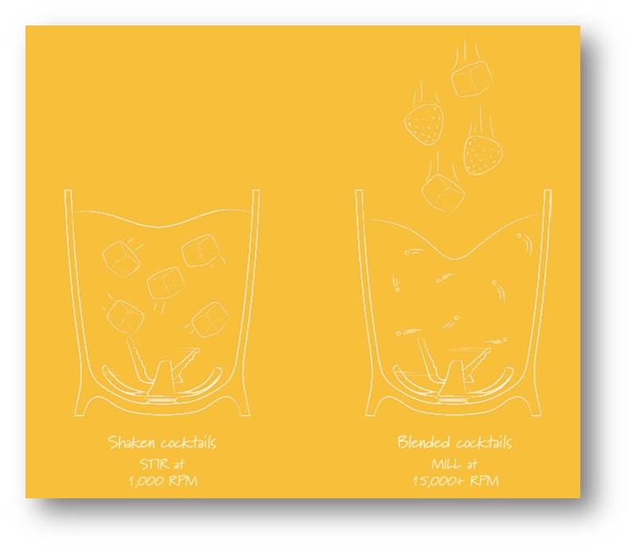Существует колоссальная разница между свежим ананасом и магазинным соком в ваших коктейлях с точки зрения вкуса и витаминов. Да витаминов! Итак ром, водка, текила может быть не на вершине вашего рейтинга здорового питания, однако вы можете чувствовать меньше вины, зная что смешивайте их не восстановленными и пастеризованными лишенными витаминов соками. И задолго до Джеймса Бонда, были постоянные споры встряхивать или взбивать, и перемешивать или нет. Все эти текстуры имеют свое влияние на вкус.
Для получения однородной ледяной крошки, для Маргариты, используйте высокую скорость. И наоборот, если вы предпочитаете, свои коктейли смешанные, добавьте ваши ингредиенты с целыми кубиками льда, и используйте Медленную скорость. В результате вы получите освеженный напиток, такой же как в шейкере, только без затруднительной работы руками.
Таким образом, с суперблендером BORK, вы можете использовать свежие овощи и фрукты в различных коктейлях, от маргариты до дайкири, и также просто готовить классически смешанные/освеженные напитки со льдом.
B802 Новый Лучший друг миксологов!
Стационарный блендер BORK B802
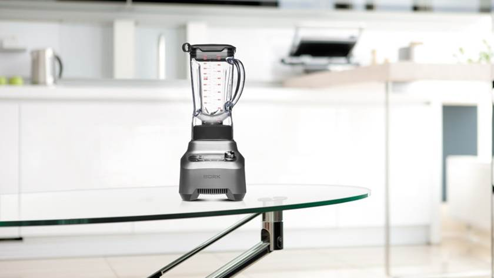Устройство
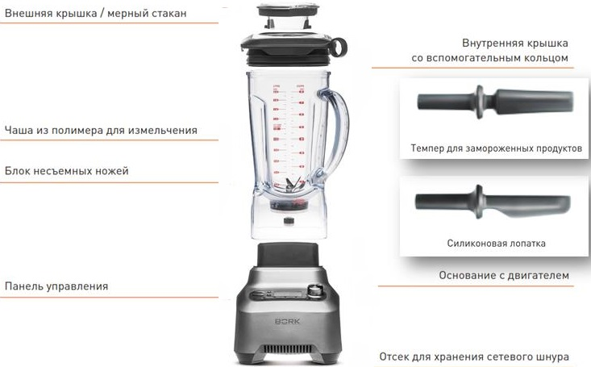Панель управления
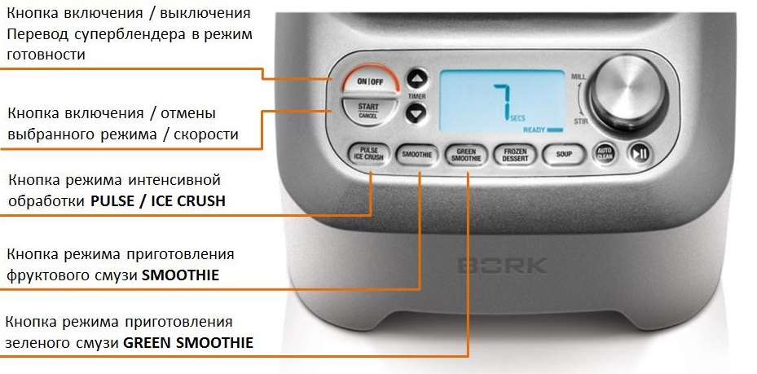Панель управления
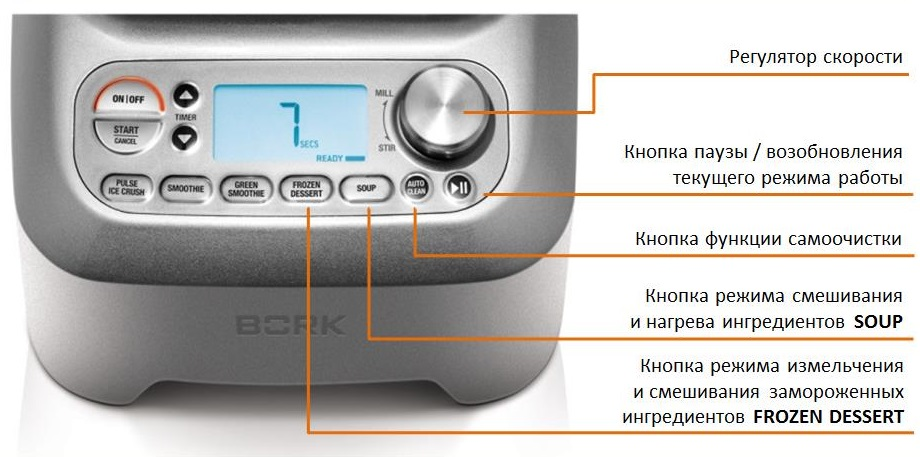6 причин пользоваться Суперблендером BORK
1. Автоматические программы
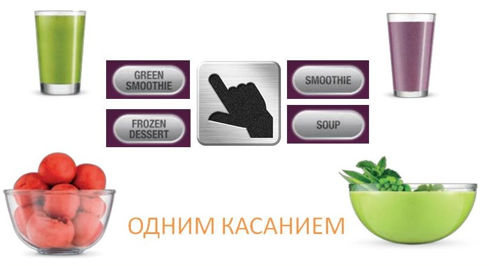2. Работа с жидкими и твердыми ингредиентами
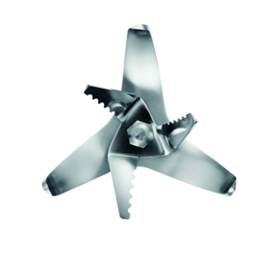 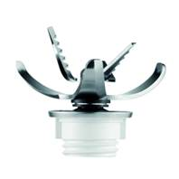Один кувшин для всех ингредиентов
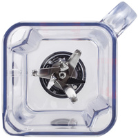3. Интуитивное управление
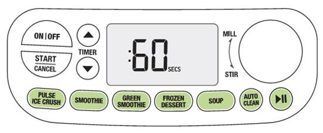4. Особо мелкие частицы
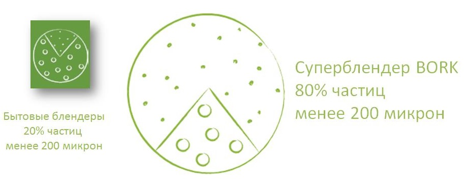Супер мощный двигатель
5. Система ножей ProKinetix
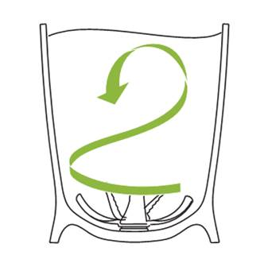Минимальное время смешивания
6. Больше витаминов
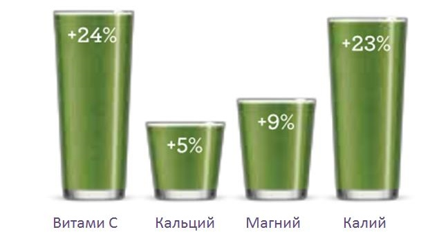Больше витаминов н 24%
Книга рецептов
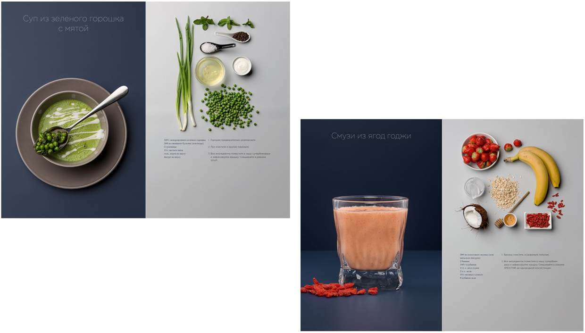Суперблендер BORK B802
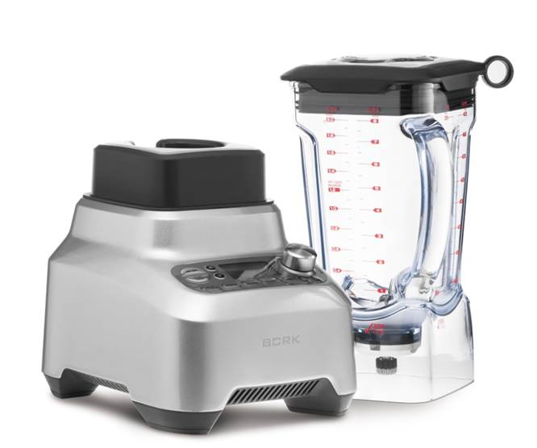Характеристики и свойства
Pro Kinetix™
Легкая чаша объемом 2.0 литра EastmanTritan ™ (BPA free)
Крышка с выходом пара
5 автоматических программ:
- Pulse
- Ice crush
- Smoothie
- Green smoothie
- Frozen dessert
- Soup
12 скоростей в ручном режиме
Таймер с прямым и обратным отсчётом
Пауза
Темпер и лопатка
Программа самоочистки
Высока мощность 2200 Ватт
Литой корпус
LCD дисплей